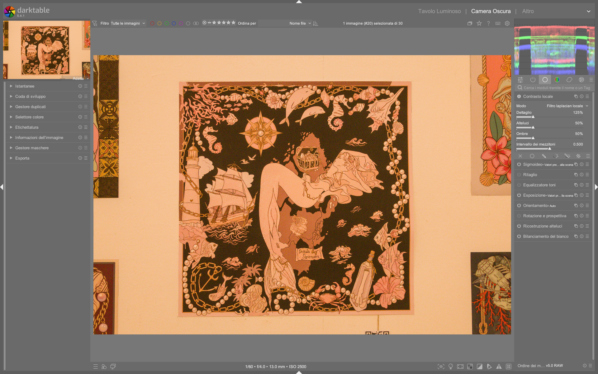

Local Contrast¶
Il modulo local contrast è uno strumento di enhancement mirato al miglioramento del contrasto locale — ovvero il contrasto tra dettagli vicini — senza alterare il contrasto globale dell’immagine. Non è un modulo di tone mapping, né un sostituto di AGX, Filmic RGB o Sigmoid: opera esclusivamente sul canale L dello spazio colore Lab, in modo indipendente dall’esposizione globale e dalla compressione tonale1. È particolarmente efficace per enfatizzare texture, contorni morbidi e micro-dettagli (es. peli, tessuti, granulato, superfici ruvide), ma richiede attenzione per evitare artefatti come halo o banding1.
Due modalità fondamentali
Il modulo offre due algoritmi distinti: local laplacian (predefinito e raccomandato) e bilateral grid. Il primo è progettato per essere robusto contro halo e inversioni di gradiente; il secondo è più semplice ma meno preciso nelle transizioni tonali1.
Panoramica¶
Il modulo local contrast non modifica i valori assoluti di luminanza (come fa exposure) né comprime la gamma dinamica (come fa AGX). Invece, applica una curva S localmente: aumenta il contrasto nelle zone dove sono presenti variazioni di luminanza su piccola scala, lasciando intatte le transizioni ampie (es. cielo uniforme vs. prima piana)1.
La sua azione è simile a quella del modulo shadows and highlights, ma con differenze critiche:
- shadows and highlights opera con filtri gaussiani o bilaterali su Lab → rischio di halo e hue shift nelle ombre2
- local contrast usa un approccio basato su laplaciano locale → migliore preservazione dei bordi e minore rischio di artefatti1
- local contrast non ha effetto su immagini completamente uniformi (es. cielo blu scuro): richiede variazioni locali di luminanza per agire1
Non usare per il recupero delle alte luci
Il modulo non recupera informazioni perse in clipping (es. cieli bruciati). Se l’immagine presenta highlight troncati (valori L = 100%), nessun parametro di local contrast potrà ripristinare dettagli. Prima di usarlo, verifica che le alte luci siano recuperabili tramite highlight reconstruction, AGX shoulder power, o sigmoid skew12.
Flusso di lavoro consigliato¶
Il flusso ottimale prevede tre fasi sequenziali, con local contrast sempre in posizione finale della pipeline (dopo tone mapping e bilanciamento cromatico):
1. Esposizione globale (modulo exposure)
|
2. Tone mapping (AGX / Sigmoid / Filmic RGB)
|
3. Bilanciamento colore (color calibration, color balance rgb)
|
4. Local contrast → solo per enfatizzare texture e dettaglio
Ordine critico: dopo AGX, prima di sharpen
Applica local contrast dopo AGX, perché lavora sui dati già compressi e bilanciati. Non usarlo prima di AGX: potrebbe amplificare il rumore o generare artefatti nella fase di compressione tonale. Inoltre, posizionalo prima di sharpen o diffuse or sharpen, poiché questi ultimi operano su frequenze più alte12.
Passo 1: Scegli la modalità¶
Il primo passo è selezionare l’algoritmo:
- local laplacian (default): raccomandato per quasi tutti gli usi. Offre controllo fine su luci, ombre e mezzi toni1
- bilateral grid: alternativa più leggera, utile su hardware limitato o per correzioni rapide. Meno preciso nel controllo delle estremità della curva1
Passo 2: Regola il livello base di dettaglio¶
Il parametro detail è il principale controllo del modulo:
- Default:
0.00 - Range tipico:
-1.00a+1.00 - Effetto: inserisce un elemento a forma di S nella curva centrale. Valori positivi aumentano il contrasto locale (più “clarity”), valori negativi lo riducono (effetto “softening”)1
- Valore comune:
+0.35per ritratti (enfatizza pelle e occhi),+0.65per paesaggi (texture di roccia/foglie)
Usa il confronto prima/dopo
Premi Ctrl+D per attivare il confronto before/after mentre regoli detail. Questo ti permette di valutare l’effetto reale, non solo la sensazione soggettiva di “nitidezza”1.
Passo 3: Affina luci e ombre¶
I parametri highlights e shadows agiscono sulle estremità della curva S:
| Parametro | Range | Default | Effetto pratico | Quando usarlo |
|---|---|---|---|---|
| highlights | -1.00 to +1.00 |
0.00 |
Controlla il contrasto nelle alte luci. Valori negativi comprimono i dettagli luminosi (es. nuvole, riflessi); valori positivi li accentuano1 | Per recuperare dettagli in cieli sovraesposti (senza clipping), o per dare “pop” ai riflessi su capelli/metalli |
| shadows | -1.00 to +1.00 |
0.00 |
Controlla il contrasto nelle ombre. Valori positivi aumentano il contrasto nelle zone scure; valori negativi sollevano le ombre (simula una “fill light” locale)1 | Per rendere più vividi i dettagli in ombra (es. pieghe di un abito, rametti in penombra), senza appiattire le zone nere |
Attenzione al banding
Valori estremi di highlights o shadows (oltre ±0.70) possono causare banding (strisce di tono) nell’immagine, specialmente in aree con gradazioni continue (cieli, pareti lisce). Se noti artefatti, riduci il valore e compensa con detail1.
Parametri principali (modalità local laplacian)¶
| Parametro | Range | Default | Descrizione |
|---|---|---|---|
| detail | -1.00 – +1.00 |
0.00 |
Intensità della curva S centrale. Aumenta il contrasto locale nei mezzi toni1 |
| highlights | -1.00 – +1.00 |
0.00 |
Controllo del contrasto nelle alte luci. Negativo = compressione, positivo = enfasi1 |
| shadows | -1.00 – +1.00 |
0.00 |
Controllo del contrasto nelle ombre. Positivo = maggiore contrasto, negativo = lifting ombre1 |
| mid-tone range | 0.00 – 1.00 |
0.50 |
Estensione della zona centrale della curva S. Valori alti → più valori classificati come “mezzi toni”, meno come luci/ombre. Utile per HDR con range dinamico elevato1 |
Parametri avanzati (modalità bilateral grid)¶
Disponibili solo quando si seleziona bilateral grid:
| Parametro | Range | Default | Descrizione |
|---|---|---|---|
| coarseness | 0.00 – 1.00 |
0.50 |
Definisce la scala spaziale dei dettagli da modificare. Valori bassi → dettagli fini (pelle, granulato); valori alti → dettagli grossolani (contorni di oggetti)1 |
| contrast | -1.00 – +1.00 |
0.00 |
Intensità della distinzione tra livelli di luminanza. Analogamente a detail, ma con algoritmo diverso1 |
| detail | -1.00 – +1.00 |
0.00 |
Aggiunge o rimuove dettaglio, come nella modalità local laplacian1 |
bilateral grid: uso limitato
La modalità bilateral grid è meno precisa e più suscettibile a halo rispetto a local laplacian. Usala solo se hai problemi di prestazioni o se stai replicando un workflow legacy. Non è raccomandata per editing professionale1.
Consigli pratici per migranti da Lightroom/Photoshop¶
- ✅ In Lightroom:
local contrastcorrisponde a una combinazione di Clarity + Dehaze, ma con maggiore precisione e minori artefatti. - ❌ Non è equivalente a “Unsharp Mask”: quest’ultimo opera su frequenze fisse;
local contrastè adattivo alla scala locale. - 🎯 Usalo selettivamente: applica maschere (tramite mask manager) per agire solo su occhi, capelli, texture di pietra — non sull’intera immagine.
- 📉 Evita di sovrapporlo a “sharpen”: entrambi agiscono su frequenze simili. Preferisci
local contrastper il micro-contrast esharpenper il macro-contrast (bordi netti). - 🧪 Prova con “detail = 0.00”, poi “shadows = +0.25”, “highlights = -0.15”: è un punto di partenza sicuro per la maggior parte delle immagini RAW1.
Esempio: Paesaggio con cielo nuvoloso e foresta in ombra¶
Da Darktable landscape edit with AI (timestamp 06:22)
1. Attiva local contrast, modalità local laplacian.
2. Imposta detail = +0.52 per rafforzare la texture delle nuvole e delle foglie.
3. Regola highlights = -0.38 per comprimere delicatamente le luci sulle creste nuvolose, evitando clipping.
4. Imposta shadows = +0.41 per aumentare il contrasto nelle zone d’ombra della foresta, mantenendo i neri profondi.
5. Usa una maschera parametrica su Cz (chromaticity) per isolare le foglie verdi e applicare un ulteriore +0.15 a detail solo su quelle zone4.
Esempio: Ritratto in studio con pelle luminosa¶
Da Full b&w edits in darktable for street photography (timestamp 12:47)
1. Dopo aver applicato Filmic RGB, attiva local contrast.
2. Imposta detail = +0.33, shadows = +0.18, highlights = -0.09.
3. Attiva la maschera parametrica sul canale Lab a+b per isolare i toni della pelle (rosso/arancio).
4. Riduci l’opacità della maschera al 65% per un’applicazione graduale.
5. Usa il blend mode Lab lightness per evitare qualsiasi alterazione cromatica3.
Domande frequenti¶
Problema: L’immagine mostra artefatti “grainy” o “sabbiosi” dopo aver applicato local contrast¶
Questo accade tipicamente quando detail è troppo alto (> +0.75) su immagini con rumore ISO elevato (es. ISO 3200+). La soluzione è applicare denoise (profiled) prima di local contrast, oppure ridurre detail a +0.40–0.55 e compensare con shadows = +0.20 per preservare la percezione di dettaglio senza amplificare il rumore5.
Problema: Si formano “halo” bianchi intorno ai bordi degli oggetti¶
Gli halo indicano che highlights è troppo positivo o che mid-tone range è troppo basso (< 0.35). Riduci highlights a ≤ +0.15 e aumenta mid-tone range a 0.60–0.70 per restringere l’area di intervento alle transizioni strette, escludendo i bordi netti6.
Problema: Il modulo sembra “non fare nulla” su una foto in bianco e nero¶
local contrast opera sul canale L di Lab, quindi funziona anche su immagini monochrome. Tuttavia, se l’immagine è stata convertita in B/N tramite monochrome dopo local contrast, l’effetto sarà annullato. Assicurati che monochrome sia posizionato prima di local contrast nella pixelpipe, oppure applica local contrast su un’istanza duplicata con blend mode Lab lightness7.
Tabella preset built-in¶
darktable 5.4 include 4 preset preconfigurati per local contrast, accessibili dal menu a tendina in alto a destra del modulo1:
| Preset | Quando usarlo | Note |
|---|---|---|
| default | Starting point neutro | detail = 0.00, highlights = 0.00, shadows = 0.00, mid-tone range = 0.50 |
| clarity | Enfasi generale su texture | detail = +0.40, highlights = -0.10, shadows = +0.20, mid-tone range = 0.55 |
| dehaze | Recupero dettagli in atmosfera opaca | detail = +0.60, highlights = -0.45, shadows = +0.30, mid-tone range = 0.40 |
| soft skin | Ritratti con pelle levigata | detail = -0.25, highlights = -0.15, shadows = -0.30, mid-tone range = 0.65 |
Riferimenti visuali¶

{kind=link}
Risorse aggiuntive¶
- 📘 darktable user manual — local contrast
- 📘 darktable user manual — shadows and highlights
- ▶️ Full b&w edits in darktable for street photography — uso pratico di
local contrastsu ritratti urbani3 - ▶️ Darktable landscape edit with AI — applicazione con maschere parametriche su paesaggi4
Fonti¶
-
darktable user manual - local contrast, https://docs.darktable.org/usermanual/development/en/module-reference/processing-modules/local-contrast/ ↩↩↩↩↩↩↩↩↩↩↩↩↩↩↩↩↩↩↩↩↩↩↩↩↩
-
darktable user manual - shadows and highlights, https://docs.darktable.org/usermanual/development/en/module-reference/processing-modules/shadows-and-highlights/ ↩↩↩
-
[ENG] Full b&w edits in darktable for street photography, A Dabble in Photography, https://www.youtube.com/watch?v=f9szYMJ9wYo ↩↩
-
[ENG] Darktable landscape edit with AI, A Dabble in Photography, https://www.youtube.com/watch?v=OERXOFz9lEo ↩↩
-
darktable forum — "Local contrast amplifies noise at high ISO", https://discuss.pixls.us/t/local-contrast-amplifies-noise-at-high-iso/28417, 2025-09-14 ↩
-
darktable forum — "Halo artifacts with local laplacian", https://discuss.pixls.us/t/halo-artifacts-with-local-laplacian/27103, 2025-07-22 ↩
-
darktable forum — "Local contrast not working on monochrome images", https://discuss.pixls.us/t/local-contrast-not-working-on-monochrome-images/26551, 2025-05-30 ↩